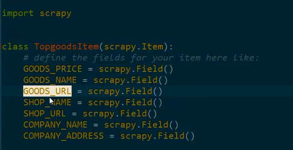
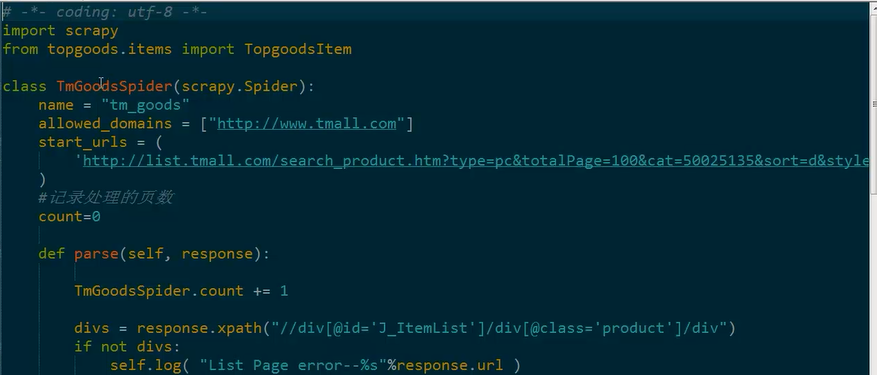
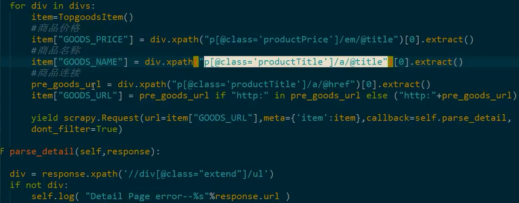
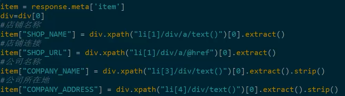
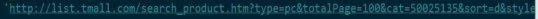
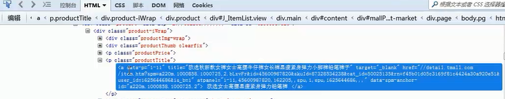
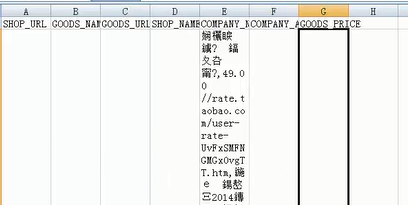
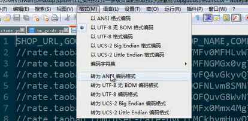
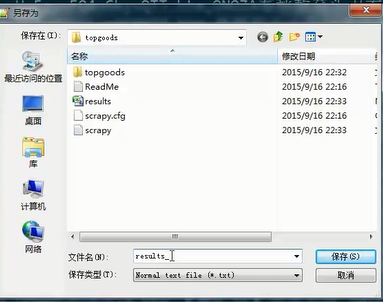
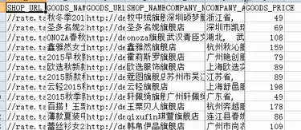

1、目标网站——天猫商城
2、抓取内容——天猫商城销量前60的商品的情况（商品价格、商品名称、商品URL）、店铺的情况（店铺名称、店铺URL、公司名称、公司地址）
3、存储格式——Excel表格
1、item编写

2、spider编写



浏览网页内容

右击某个元素，点击“使用firebug查看元素”：

存储的excel 表，打开可能是乱码，是因为编码格式不正确：

正确的方法是把要打开的文件使用notepad++打开，然后选择格式，点击“转为ANSI编码格式”：

之后另存为一个新的文件：

打开刚才存储的文件，可以清晰看到里边的内容：

3、settings设置
Kitchen
Appliances
Cookware
Dining Room
Furniture
Dishware & Utensils
Linens
要求掌握：怎样在spider的不同parse函数中传递数据
【本文由麦子学院独家原创，转载请注明出处并保留原文链接】